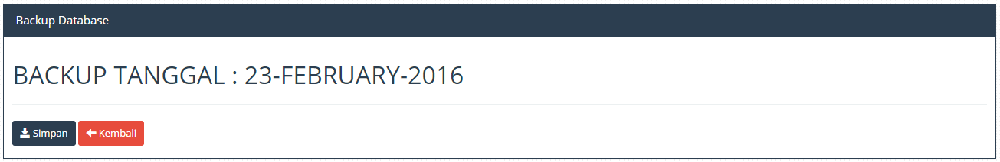
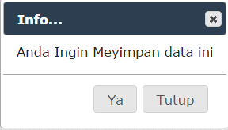
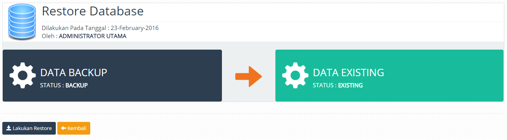
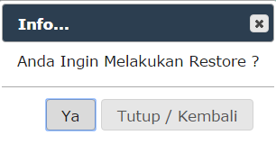

Backup database digunakan untuka melakukan antisipasi terhadap kerusakan data yang terjadi secara tidak sengaja maupun disengaja , proses ini disediakan guna mempermudah userdalam mengelola data bila terjadi kerusakan., tahapan melakukan Backup dan Restore dapat dilihat melalui cara dibawah ini .
1. Menambah Data Backup
1. Masuk Ke Menu "Tools".
2. Masuk Ke Menu "Backup Database".
3. Setelah Masuk Ke Menu "Backup Database" , Klik Tombol "Tambah".

Gambar Form Backup Database
4. Klik Tombol Ya Pada Notifikasi

Gambar Form Notifikasi
2. Restore Data Backup
1. Masuk Ke Menu "Tools".
2. Masuk Ke Menu "Backup Database".
3. Setelah Masuk Ke Menu "Backup Database" , Klik Tombol "Restore Database".

Gambar Form Restore Database
4. Klik Tombol Ya Pada Notifikasi

Gambar Form Notifikasi
Created with the Personal Edition of HelpNDoc: Free EPub producer